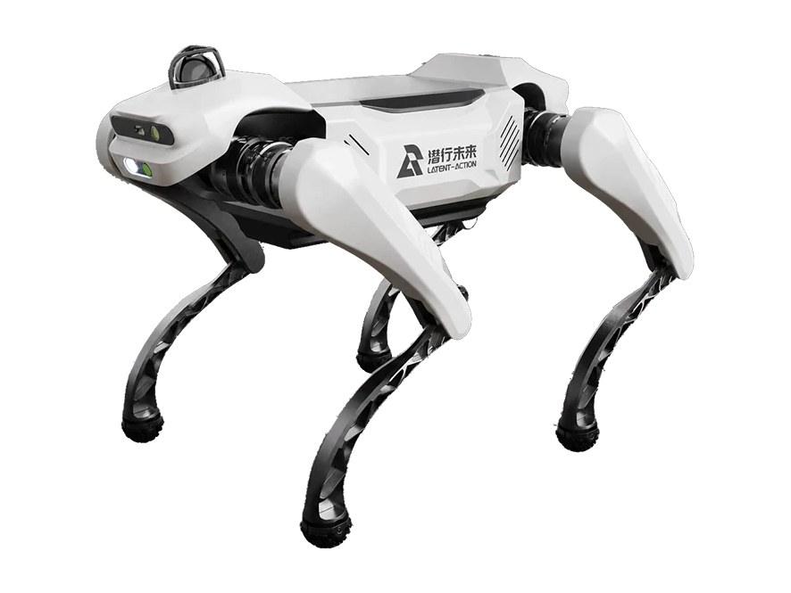

P05
A quadruped robot from China, announced 2026.
Sources retrieved: 14 October 2026 (A, B)
- Applications
- Intended use, per the manufacturer
- Positioned for light weight, high value, and ease of use, P05 will explore research and education, consumer applications, and lightweight inspection.Source and note: Intended use, per the manufacturerB latent-action.com/en/news/60.html · Retrieved 14 October 2026
- Indicative price
- Not stated

Manufacturer's own photo.
Specifications
17/33 specifications disclosed 16 not stated
16 fields hidden
How to read the figuresShow guideClose
- not statedNo source
- noStated by a source
- 0Reported as zero
- ASource
- A*Source with a caveat (select it)
- CERecords only what the manufacturer states regarding CE marking.
Select a source marker for source details and notes.
Physical10/14 disclosed
Power3/5 disclosed
Sensing and autonomy2/6 disclosed
Payload and expansion2/3 disclosed
Commercial0/1 disclosed
Compliance & certifications0/4 disclosed
Against the field
Each strip holds every robot of this type in the guide that states the figure, one bar per group of values. Further right means a larger figure, not a better robot. A taller bar means more robots in that group.
Weight
at most 16kgat most 35.3lbOur conversion from 16 kg. The manufacturer does not state an imperial figure itself, so the conversion has no source of its own.
140 quadrupeds state a weight
P05 states an upper limit, not one figure, so it is shown open-ended and not ranked against the others. 4 state only a bound (≥ or ≤) and are not ranked. Log scale: each step along the axis multiplies the value.
Degrees of freedom
12DoF
83 quadrupeds state degrees of freedom
15 state a higher figure, 4 a lower one. 62 more state exactly the same figure. 1 states only a bound (≥ or ≤) and is not ranked.
Runtime
90minNote: load condition not stated
116 quadrupeds state a runtime
60 state a higher figure, 5 a lower one. 7 more state exactly the same figure. 16 state a range that includes this figure. 27 state only a bound (≥ or ≤) and are not ranked.
Max speed
at least 10.8km/hat least 6.71mphOur conversion from 3 m/s. The manufacturer does not state an imperial figure itself, so the conversion has no source of its own.
126 quadrupeds state a top speed
P05 states a lower limit, not one figure, so it is shown open-ended and not ranked against the others. 30 state only a bound (≥ or ≤) and are not ranked.
Notes
The footer of the producer's website gives its address as B106, Yanxiang Science and Technology Building, Binjiang District, Hangzhou (translated from the Chinese).
The producer's news item says the 2026 World Robot Conference was held in Beijing on 19 to 23 August.
The same news item says the new lightweight Smart Companion P05 made its public debut at that conference.
The selection guide lists the materials as high-strength engineering plastic and aluminium alloy.
The selection guide gives a battery life of 1.5 h and a travel range of 6 km.
Sources
One line per source, not per figure: a source has one retrieval date.
- Acdn.latent-action.com/uploads/20260915/7ca654a55e6d466752912782de861a1d.pptxSecondary. Retrieved 14 October 2026
- Blatent-action.com/en/news/60.htmlMain source. Retrieved 14 October 2026